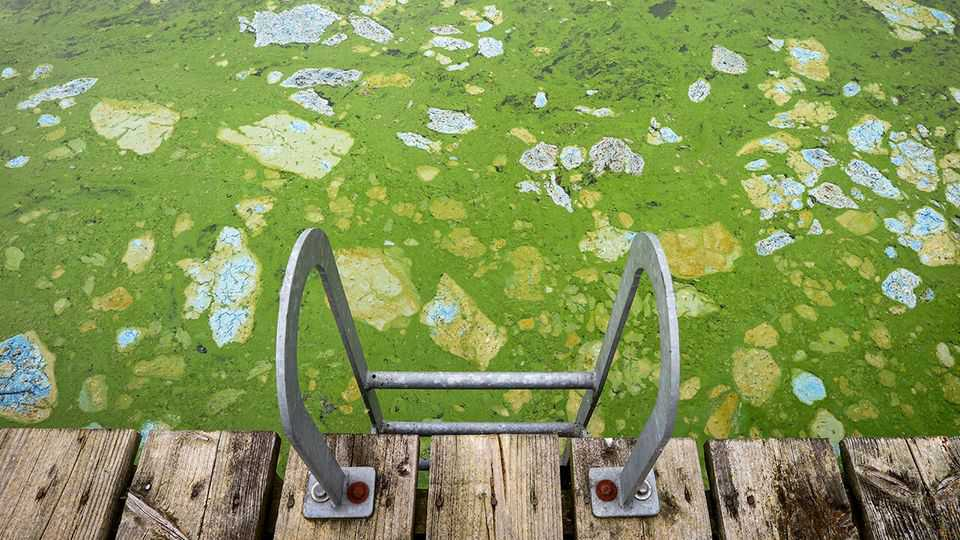
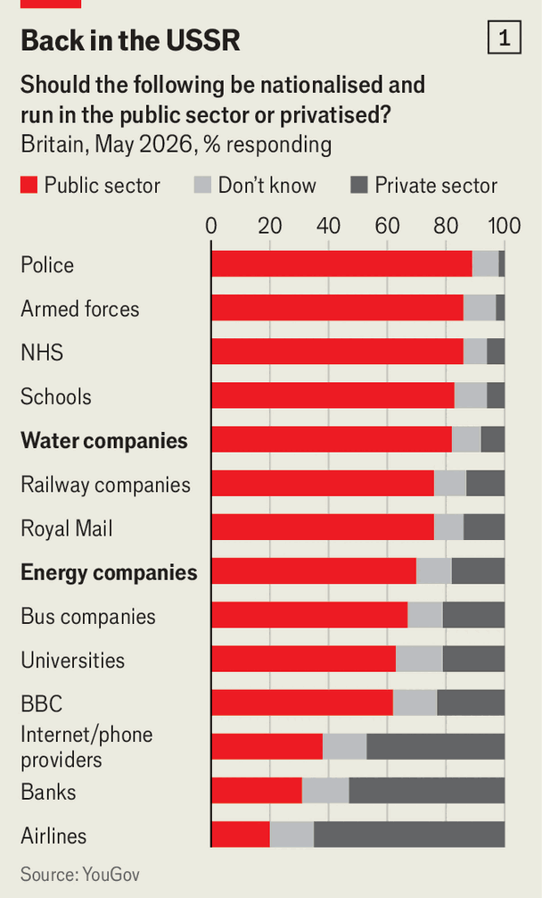
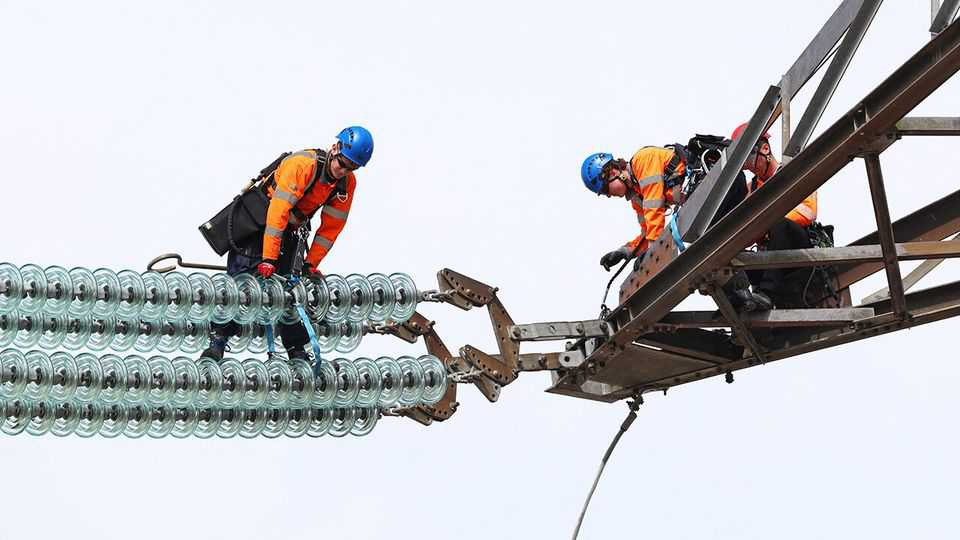

Britain’s privatised utilities are a mess
But public ownership is a red herring
June 11th 2026

Northern Ireland Water exemplifies the crisis engulfing the water industry. The company is spewing over 20m tonnes of untreated sewage and waste into waterways every year. This deluge has helped coat Lough Neagh, the largest lake in the British Isles, in toxic blue-green algae. Developers claim that they have put on hold plans for building 15,000 homes because sewers cannot handle more waste.
Britons are right to be angry. In England a raw-sewage spill is reported roughly every two minutes. Surfers avoid certain beaches for fear of infections. Water bills rose by 26% in 2025 and consumers pay more for electricity than almost anywhere else in Europe. Small wonder that irate mothers have taken to performing citizen’s arrests of water executives.

Left-wing politicians have seized on the discontent. As part of a push to expand public ownership, from steel to rail, they blame the utilities’ troubles on privatisation dating back to the 1980s. Zack Polanski, the Green Party’s leader, revs up his base by complaining how a third of each water bill goes to paying firms’ dividends and servicing their debt. Andy Burnham, the front-runner to become the next Labour prime minister, promises to bring water and energy “under stronger public control”, though he stays cagey about what that means. The public agrees: 70% back nationalising energy and 82% water, according to YouGov, a pollster (see chart 1).
Supporters of nationalisation should look across the Irish Sea. Northern Ireland Water has always been publicly owned, yet it is in as much trouble as its English counterparts. This hints at a wider point: nationalisation would be a dead end. Many of its supposed benefits, from stopping excess profits to unlocking new investment, are less promising than its supporters suggest. The transitional costs would be steep. And it would be a distraction. High investment, good environmental outcomes and low bills are not all simultaneously achievable without big subsidies from taxpayers. Politicians should be honest that this requires making hard trade-offs, not changing who owns the pipes.
Privatisation has had some successes. By introducing profit incentives, the water industry achieved 30 percentage points more cumulative productivity improvement than comparable industries in the 25 years after privatisation, according to Frontier Economics, a consultancy. Power cuts are down by over half since distribution networks entered private hands. Water leakage in England has fallen by over a third. On key metrics, England’s water industry is not obviously worse than those of countries with nationalised industries, like the Netherlands (see table).
The benefits of nationalisation are also less juicy than many realise. Take the argument that public ownership is needed to curb monopoly profits. Ofwat and Ofgem, the water and energy watchdogs respectively, have not covered themselves in glory. Sneaky businesses loaded up on far more debt than expected, with the average water company’s debt-to-equity ratio surging from 4% in 1991 to 72% by 2009. This enabled firms to extract outsize returns. But as Ofwat slowly caught on to operators’ tricks, their measure of average returns on equity fell from 13% in the early 1990s to around 3% in 2020-24, according to the Independent Water Commission.
Ofgem faced similar problems. Weak oversight allowed some energy retailers to skimp on financial reserves, confident that the government would never let homes go dark. That moral hazard contributed to a rash of supplier bankruptcies in 2021-22, saddling bill-payers with unnecessary costs. But Ofgem has since tightened requirements. The retail market today is a gleaming example of competition’s benefits, with companies like Octopus Energy and e.on vying to offer innovative tariffs. The lesson is not the need for nationalisation, but for sharper regulatory oversight.
Meanwhile the idea that public ownership will solve underinvestment misdiagnoses the problem. Although the private sector cut corners, much of the blame for low investment lies with regulators and governments. They rejected proposals for new reservoirs (none has been built for 30 years) and stalled new nuclear power for much of the 2010s. More investment meant higher bills—unpalatable for Britain’s here-today, gone-tomorrow politicians.

The need for new investment will dominate the years ahead. Water-industry spending on enhancements was increased by 300% after a review in 2024. The National Grid needs to quadruple the speed at which it builds out the transmission network to meet Labour’s goal of 95% clean electricity by 2030. Funding this will burn a hole in the public’s pockets. Nationalisation won’t change that.
Mr Polanski’s complaints about high debt costs and dividends ignore the fact that much of this reflects repayment for real investment and genuine risk taken by private companies. Under public ownership the state would still need to borrow to fund infrastructure, while absorbing more of the risk when things go wrong. True, the rate on government borrowing might be marginally cheaper, but this does not alter the arithmetic fundamentally.
And this ignores the costs of nationalisation. Free marketeers claim nationalising water and energy would drain hundreds of billions from the exchequer’s coffers. This is overstated, as government would get a stream of future revenues from bills in exchange for the upfront payment. But two risks remain. The first is mispricing the purchase. Pay too little and the government signals it cannot be trusted on property rights, deterring global investment; pay too much and any savings evaporate. Second, financing nationalisation through new bonds risks pushing up the yield on all government debt. In the low-rate 2010s this might have been manageable. Today it is playing with fire.
Getting investment going requires not just cash but strong co-ordination. According to the left, privatisation is a recipe for gridlock. The owners of wind turbines, pylons and substations spend so much time squabbling over commercial interests that nothing gets done. As evidence of what public control could achieve, they point to Mr Burnham’s transformation of Greater Manchester’s buses as mayor. In the nearly 40 years after deregulation, passenger journeys fell by half as the network fragmented. Since the city took control of fares and timetables, journeys have been increasing.
But Manchester’s buses also puncture the case for full nationalisation. They remain privately owned, with operators bidding for contracts to run services. Dieter Helm, a utilities economist, says the ownership debate is “simplistic”. The more useful question is which functions each side performs better. For him, planning and system design belong in the public sphere; service provision is where private competition adds value. This would not be a radical departure. The publicly owned National Energy System Operator already plans the power grid, and the government is moving in a similar direction for water.
Debates about ownership tend to descend into religious fervour. The reality is boringly technocratic. Few would propose renationalising British Airways or British Telecom, where competition brought clear gains; nobody serious would advocate privatising defence. Utilities sit in the grey zone. As monopolies they cannot be left unchecked, but regulation and selective public control over planning would suffice. Starting from scratch, a nationalised model could work. But the transition costs dwarf any benefits. Rebuilding state capacity would take years, distracting from the real questions facing Britain’s utilities.
Those trade-offs are pressing. Pursuing the 2030 clean-power target will run up bills. Meeting river-quality standards requires both large investment and a tougher approach to farmers, who pollute more rivers than water firms do. New infrastructure will remain stuck without planning reform to overcome NIMBY opposition.
As Northern Ireland Water shows, these problems don’t disappear under state ownership. The business has complained that “material underfunding” is a major cause of its troubles. Increasing bills, raising taxes or cutting spending elsewhere are the only ways to fund investment ultimately. That’s a question not of ownership, but of political courage. ■
For more expert analysis of the biggest stories in Britain, sign up to Blighty, our weekly subscriber-only newsletter.